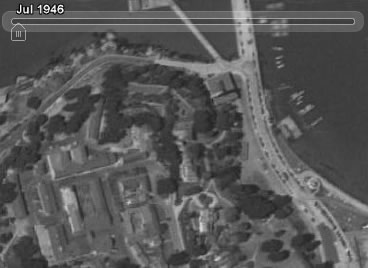
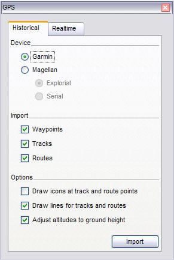
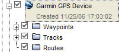

Viewing Timelines
If you have downloaded data that contains time information (for example, GPS tracks),
you can view this information sequentially in Google Earth. For example, you can view
GPS tracks that occurred within a specific time period and visually follow these
tracks. To do this:
- If necessary, import the GPS data or other time-related data.
- In the Places panel, select this data. The time slider appears at the top
of the 3D viewer with a time range that corresponds to the data you selected.
- Do any of the following:
- To re-define the time range of data displayed in the 3D viewer, drag the range
marker (see below) to the right or left.
- To move the time range earlier or later, drag the time slider (see below) to the right or left. The range marker moves with
the time slider so that the time range shown remains the same.
- To play an animation of the sequence, click the Play button (see below). Note that this is only useful if only a portion of
the data is defined in the time range.

Features of the time slider include:
- Click this to play an animation of a sequence. This works best if you
move the range marker to define a time range smaller than the whole set. Click the
adjacent buttons to step forward or back.
- Drag the range marker to the right or left to re-define the time range of
data displayed.
- Click this to set options for the time
slider.
- Zoom in or out to shorten or lengthen the date range covered by your
timeline. This allows you to more easily see the different imagery that's available
within a shorter or longer period of time. Notice that, as you zoom in or out, the
Start and End dates on the timeline change.
- Drag this to move the time range earlier or later.
Note: The time slider is not available when you record movies.
Setting Timeline Options
You can set options for the timeline display feature. To do
this:
- In the time slider, click the settings icon (see
above). The Date and Time options dialog box appears. Options include:
-
Start and End date/time - Set the date and time for the start and
end of the timeline.
-
Display time in - Choose the appropriate type of displayed time.
-
Animation speed - Use this slider to set the speed of the animation
that occurs when you click the play button on the time slider (see above).
-
Loop animation - Select this checkbox to play your animation
continuously.
- When you are finished, click OK.
Viewing Historical Imagery
By default, Google Earth displays most up-to-date imagery available. You can view
historical imagery so that you can see how places have changed over time.

San Francisco in 1946
To access historical imagery, do one of the following:
- Click View > Historical Imagery
- Click the Clock icon
 in the toolbar above the 3D viewer.
in the toolbar above the 3D viewer.
The small vertical lines on the timeline indicate the dates of
different imagery available for your location. Notice that the slider is automatically
positioned at the far right of the timeline, showing that you are viewing more recent
satellite imagery. Move back or forward in time by doing the following:
- Click the Forward or Back buttons above the slider.
- Drag the slider along the timeline. Note that regardless of where you release your
mouse on the timeline, the slider automatically moves to the closest date for which
imagery is available.
Viewing Timelines
If you have a GPS (Global Position System) device, you can connect it to your computer
and import your waypoint and track data into Google Earth. Note that this set of features
is available to users of Google Earth Pro and Google Earth EC, but not the free version
(see Google Earth
Products). Topics in this section include:
Supported Devices
Google Earth currently supports most GPS devices from the following manufacturers:
The GPSBabel web site lists the
devices officially supported by the Google Earth GPS import feature. You can try other
devices, but they might not work correctly. If you're using a device that is not
supported, you can try importing GPS data from the device to your computer as a .gpx or
.loc file and then opening it in Google Earth (File > Open).
Required Connectors
You need either a serial or USB cable to connect the GPS device to your computer.
Typically, your device is sold with one type of cable. If your GPS device did not come
with a cable, you can visit the manufacturer's web site to purchase the correct one for
your model.
About GPS Points
When your GPS data is imported into Google Earth, it is categorized into three possible
folders, depending upon the type of point. These folders are:
-
Tracks - Tracks (or trackpoints) are the points automatically recorded
by the GPS device periodically along the recorded route. They can be imported into the
Google Earth application as paths.
-
Waypoints - Waypoints are points entered manually by the user and
typically marked with a name, such as "home" or "turnaround point."
-
Routes - Route points are those points that the GPS device uses to
creating the routing, such as when you instruct the device to "go to" a
recorded point from another recorded point. Route points can contain multiple connected
"go to" instructions. They can be imported into the Google Earth application
as paths.
Importing GPS Data
Tip - If you have a .GPX file on your computer, you can import it by dragging and dropping the
file into Google Earth.
Importing the data from your GPS to Google Earth is simple:
- If you are using a Garmin USB device and a Windows computer, please install
the Garmin USB driver from the CD that came with your GPS device or download this driver
from the Garmin
website.
- Connect your device to the computer running Google Earth.
You can use either a serial cable or USB cable, depending upon which one came with your
device.
- Turn on the GPS device. Once your device is on and activated, it is not
necessary to wait until it connects to satellites.
- From the Tools menu, select GPS. The GPS window
appears.

- Select the correct manufacturer type for your device.
- Under Import, Select the types of data you want to import.
- Under Options, choose your drawing preferences. Check Draw
icons at track and route points if you want an icon to be displayed in the 3D viewer
for every track/route point recorded by your GPS device. Check Draw lines for tracks
and routes to draw each GPS track and route as a solid line.
- Check the Adjust altitude to ground height check box to adjust all
recorded point to ground level, such as when importing a track taken on foot, car, or
bike. However, if your GPS track was recorded while hang gliding or flying, make sure
this option is not selected so that your points appear as above-ground points.
- Click OK. When your GPS data is finished loading into Google Earth, a
confirmation dialog box appears.
Your data appears in the Places panel with the label Garmin GPS Device
or Magellan GPS Device, depending upon the device used (see Supported Devices). If you expand that folder, you can see the data
sorted into the appropriate folders depending upon the type of data, as illustrated in
the example below.

You can expand those folders and explore the information within as you would any other
type of places data. This includes organizing, editing, sharing, saving, and more.
Note - If you receive a connection error, turn off the GPS device, turn
it on again, and start again from Step 4 above.
Viewing Realtime GPS Information
If you have connected your portable computer to a GPS device, you can view GPS
information in realtime. For example, you can view a live GPS track of your progress in a
car on a laptop in Google Earth as you travel. To do this:
- Connect your GPS device and portable computer as described in steps
1-4 of Importing GPS Data.
- In the GPS dialog box, click the Realtime tab.
- Choose the appropriate options:
-
Select protocol - If you don't know which one to use, choose NMEA.
-
Track point import limit - This is the maximum number of points imported per
poll of the device. A smaller number can result in faster data but a less accurate
depiction of your journey, while a larger number can mean the opposite.
-
Polling interval (seconds) - This is the frequency of which Google Earth
collects data from the GPS device.
-
Automatically follow the path - Check this to have the 3D viewer center on and
follow the current realtime GPS track.
- Click Start to begin realtime GPS tracking.